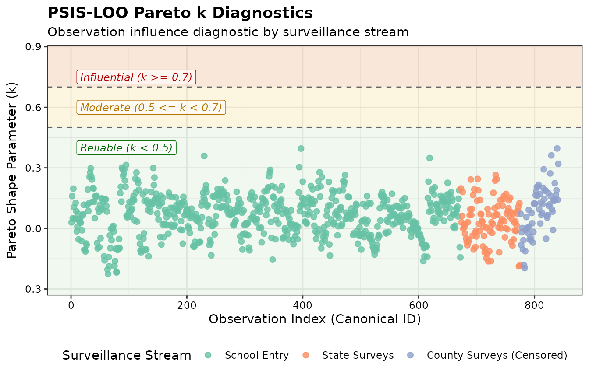

Model Evaluation & PSIS-LOO Cross-Validation
Source:vignettes/leave_some_out.Rmd
leave_some_out.RmdIntroduction
When evaluating model fit, you can use leave-one-out cross-validation (LOO-CV) to estimate out-of-sample predictive performance and identify highly influential observations without having to refit the MCMC model for every observation.
imuGAP provides S3 methods for
rstantools::log_lik() and loo::loo(), enabling
integration with the {loo}
package (Vehtari et
al. 2017, 2024) to compute
Pareto Smoothed Importance Sampling Leave-One-Out (PSIS-LOO)
diagnostics.
Computing the Pointwise Log-Likelihood
The rstantools::log_lik() method extracts the pointwise
log-likelihood matrix for all
observations across the
posterior draws. For uncensored observations, it computes the binomial
log probability mass; for left- or right-censored observations, it
computes the corresponding cumulative log probability:
data("fit_sim", package = "imuGAP")
data("observations_sim", package = "imuGAP")
data("locations_sim", package = "imuGAP")
# Compute log-likelihood matrix (Draws x Observations)
ll_mat <- rstantools::log_lik(fit_sim)
#>
#> Elapsed Time: 0.217 seconds (Generated Quantities)
dim(ll_mat)
#> [1] 2000 841Running PSIS-LOO and Inspecting Diagnostics
You can compute the Expected Log Pointwise Predictive Density
()
and Pareto shape parameter
diagnostics by calling loo() directly on an
imugap_fit object:
loo_res <- loo(fit_sim)
#>
#> Elapsed Time: 0.223 seconds (Generated Quantities)
print(loo_res)
#>
#> Computed from 2000 by 841 log-likelihood matrix.
#>
#> Estimate SE
#> elpd_loo -2104.6 32.2
#> p_loo 28.2 1.6
#> looic 4209.3 64.3
#> ------
#> MCSE of elpd_loo is 0.1.
#> MCSE and ESS estimates assume independent draws (r_eff=1).
#>
#> All Pareto k estimates are good (k < 0.7).
#> See help('pareto-k-diagnostic') for details.The Pareto shape parameter diagnostic indicates whether importance weights have finite variance and gauges the reliability of the PSIS approximation (Vehtari et al. 2017, 2024):
- (including ): High reliability; importance weights have finite variance, and the central limit theorem holds.
- : Moderate reliability; variance is finite, but convergence is slower.
- : Influential observation; raw importance weights have high or infinite variance, meaning importance sampling estimates may be unreliable without exact refitting or moment matching.
In practice, if all observations have , PSIS-LOO provides a fast and reliable leave-one-out cross-validation approximation without refitting.
Visualizing Pareto Diagnostics
You can visualize the diagnostics across all observations to check whether any specific surveillance streams or data sources exhibit high influence:
Show plot code
# Map observations to surveillance stream / layer type
loc_map <- canonicalize_locations(locations_sim)[, .(loc_id, layer)]
obs_meta <- canonicalize_observations(observations_sim, drop_extra = FALSE)
obs_meta <- merge(obs_meta, loc_map, by = "loc_id")
data.table::setorder(obs_meta, obs_c_id)
obs_meta[, stream := data.table::fcase(
layer == 1L, "State Surveys",
layer == 2L, "County Surveys (Censored)",
layer == 3L, "School Entry"
)]
k_df <- data.frame(
obs_idx = seq_along(loo_res$diagnostics$pareto_k),
pareto_k = loo_res$diagnostics$pareto_k,
stream = factor(obs_meta$stream, levels = c(
"School Entry",
"State Surveys",
"County Surveys (Censored)"
))
)
ggplot(k_df, aes(x = obs_idx, y = pareto_k, color = stream)) +
# Painted background regions for k thresholds
annotate(
"rect",
xmin = -Inf,
xmax = Inf,
ymin = -Inf,
ymax = 0.5,
fill = "#2ca02c",
alpha = 0.07
) +
annotate(
"rect",
xmin = -Inf,
xmax = Inf,
ymin = 0.5,
ymax = 0.7,
fill = "#e6ab02",
alpha = 0.12
) +
annotate(
"rect",
xmin = -Inf,
xmax = Inf,
ymin = 0.7,
ymax = Inf,
fill = "#d95f02",
alpha = 0.15
) +
# Pareto k quantitative region labels
annotate(
"label",
x = 10L,
y = 0.75,
label = "Influential (k >= 0.7)",
hjust = 0,
size = 3.2,
fontface = "italic",
color = "#b30000",
fill = ggplot2::alpha("white", 0.6)
) +
annotate(
"label",
x = 10L,
y = 0.60,
label = "Moderate (0.5 <= k < 0.7)",
hjust = 0,
size = 3.2,
fontface = "italic",
color = "#b37400",
fill = ggplot2::alpha("white", 0.6)
) +
annotate(
"label",
x = 10L,
y = 0.40,
label = "Reliable (k < 0.5)",
hjust = 0,
size = 3.2,
fontface = "italic",
color = "#006600",
fill = ggplot2::alpha("white", 0.6)
) +
geom_hline(yintercept = c(0.5, 0.7), linetype = "dashed", color = "grey40") +
geom_point(alpha = 0.8, size = 2) +
coord_cartesian(ylim = c(min(k_df$pareto_k, 0) - 0.05, max(k_df$pareto_k, 0.8) + 0.05)) +
scale_color_brewer(palette = "Set2") +
labs(
title = "PSIS-LOO Pareto k Diagnostics",
subtitle = "Observation influence diagnostic by surveillance stream",
x = "Observation Index (Canonical ID)",
y = "Pareto Shape Parameter (k)",
color = "Surveillance Stream"
) +
theme(legend.position = "bottom")
Pareto k influence diagnostics across surveillance streams